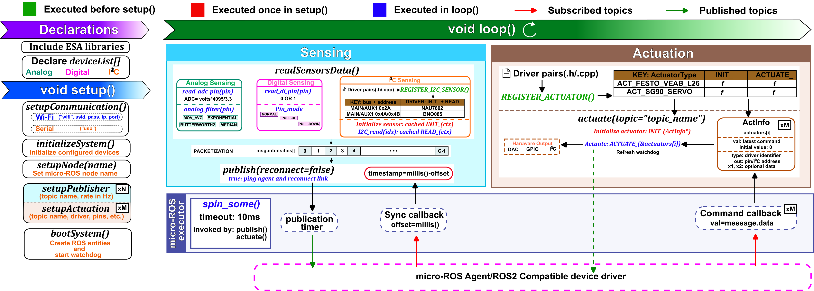

How ExoStack works
ExoStack places body-worn hubs, host nodes and external estimators on one ROS 2 graph. This page follows the paper: the overall pipeline, then each of its three parts.
System overview
ExoStack has three modules that span the path from body-worn electronics to the assistance at each joint (Fig. 1). The Embedded Sensing and Actuation (ESA) module runs on ESP32 boards that serve as hubs over the lower limbs, the upper limbs, or both, connected to the ROS 2 graph by a micro-ROS agent over Wi-Fi or USB. On the host computer, the ExoCore module turns the hub data into gait events, assistance profiles, and actuator commands, and it closes the HIL loop when personalization is needed. Its nodes are created from YAML entries and run plug-ins selected by name, all kept in the folder exo_stack_resources, which the PASE module edits before launching the nodes. Because commands are ordinary ROS 2 topics, any actuator with a ROS 2 driver can also be used.

Embedded Sensing and Actuation (ESA)

setup() (green), five calls bring the board up once (red), and every loop() (blue) packetizes the devices into msg.intensities[] and hands each actuator its latest command. publish() and actuate() spin the micro-ROS executor, which runs the publication timer and the sync and command callbacks; red and green arrows mark subscribed and published topics.Declaring a Hub
ESA is an Arduino library that hides micro-ROS behind a few calls, so a hub is a short sketch. The sketch declares its devices in deviceList[], one row per device with its interface type (AI, DI, or I2C), pin or address, label, and options such as a filter and its parameters, a pin mode, or an I²C bus (Supplementary Table S1). Five calls in setup() then bring the board up (Fig. 2). setupCommunication("wifi", ssid, pass, agent_ip, port) or setupCommunication("usb") opens the link to the agent, and initializeSystem() configures the devices. Next, setupNode(name), setupPublisher(topic, rate), and one setupActuation(topic, type, out, x1, x2) per actuator declare the node and its interfaces, and bootSystem() creates all micro-ROS entities and arms a 3-s watchdog.
Sensing and Actuation
On a sensing hub, the loop calls readSensorsData() and publish(true). Analog inputs are read and optionally filtered per channel by MOV_AVG, MEDIAN, EXPONENTIAL, or a second-order Butterworth section (BUTTER2_LPF, BUTTER2_HPF, BUTTER2_BPF, BUTTER2_NOTCH). Digital inputs are read in NORMAL, PDOWN, or PUP mode, and I²C devices through their drivers. All values fill fixed slots of the intensities array of one sensor_msgs/LaserScan message, a standard type that needs no custom micro-ROS build, and a timer publishes it on the hub's topic, such as /hub_left. On an actuation hub, the loop calls actuate(), which hands the latest Float32 set-point of each actuator to its driver. Both calls spin the micro-ROS executor with a 10-ms timeout, which runs the publication timer and the sync and command callbacks, and publish(true) also restores the agent link after a restart.
Self-Registering Drivers
Users can add their own I²C sensor and actuator drivers. A driver is a header–source pair written from a template, with an initialization function and a read or actuate function in which any vendor library may be called. One line, REGISTER_I2C_SENSOR(...) or REGISTER_ACTUATOR(type, ...), registers it before setup() runs. The core then finds sensors by bus and address and actuators by their ActuatorType identifier, the type passed to setupActuation() (Supplementary Table S2). A new sensor is thus one file pair, and a new actuator adds only its identifier to the ActuatorType enum. Drivers ship for the BNO085 IMU, the NAU7802 load-cell amplifier, the AS5600 encoder, a Festo VEAB-L-26 pressure regulator, and an SG90 servo. ExoStack is not limited to pneumatic devices, however: BLDC motors and other actuators can be added in the same way or through their own ROS 2 drivers, and future releases will include such examples.
Synchronizing the Hubs
Since wireless hubs keep independent clocks, each hub tares its clock whenever it receives /sync_trigger, storing millis() as the offset for all later stamps. The ExoCore synchronizer issues these triggers (Sec. IV-A).
ExoCore

ExoCore is the ROS 2 package exo_stack (Fig. 3). Launch files start its six executables, sync, gait_event_detector, mplanner, actuation_profile, cost, and hil, once per entry of sensors.yaml, gait_events.yaml, mplanner.yaml, and profile.yaml. In a bilateral hip exosuit, for example, flexion- and extension-start events on both legs yield four detectors, each hip receives a planner and a profile node, and switching a profile to HIL mode adds a cost and an optimizer node, the ×C and ×H instances in Fig. 3, at most one each per profile. Supplementary Table S3 and the documentation website list the topics that connect these nodes and what each element of their messages means.
Synchronization and Gait Events
The synchronizer publishes /sync_trigger at 5 Hz until all hubs listed in sensors.yaml deliver messages whose stamps agree within slop_time. It then publishes the concatenated readings on /synced_sensors and resumes triggering if no matched set arrives for 1 s. Because sensors.yaml names every channel, algorithms request signals by name rather than by index.
Each detector node passes new samples to a plug-in's detect() and, when it fires, publishes an Int32 on its event topic, such as /right_hip_extension_start. HeelStrike thresholds a foot switch, while ZeroCrossingPosToNeg and ZeroCrossingNegToPos mark flexion and extension onsets from IMU or encoder angles. To reject noise, a detector fires only when the newest ⌈ FN⌉ of its last N samples confirm the new state, and it re-arms only after a full window in the opposite state (Supplementary Fig. S1a).
From Lookup Table to Actuator Command
For each joint, a planner and a profile node turn gait events into assistance. The planner, configured in mplanner.yaml, restarts its profile at every event on its gait_event_topic; a newly received profile waits in a buffer and becomes active only between executions, so the assistance never changes mid-stride. At its own rate, it publishes next_point(t) of its plug-in as a Float32 set-point on its output_topic, where t is the time since the event (time_based) or an external gait-phase estimate (gait_phase_based). Outside the profile window, the output is default_output.
The profile comes from the joint's profile node, configured in profile.yaml. In Deployment mode, a lookup plug-in maps the walking speed and, optionally, the intent from external estimators to a row of a JSON table, using the nearest speed (Lookup_Speed_Segmentwise), interpolation (Lookup_Speed_Interpolated), or intent and speed (Lookup_Speed_Intent_Segmentwise). A builder's buildprofile() shapes the row into triangular (Builder1_List), trapezoidal (Builder2_List), or N-point (BuilderN_List) waypoints, or into polynomial coefficients, sent on profile_topic as [k, type, start, body, end, stop]. Here k identifies the candidate (0 in deployment), and stop is raised when the intent signals standing. The planner plays waypoints with LinearInterpolatedList or the overshoot-free PCHIPInterpolatedList , and coefficients with PolynomialFunction (Supplementary Fig. S1b,c). In HIL mode, only the source of the parameters changes, so a personalized set enters daily use as a new table row.
Human-in-the-Loop Optimization
In HIL mode, the session runs in rounds (Fig. 3). The optimizer publishes a candidate numbered k on hil_output_topic, the profile node builds it, and the planner plays it from the next gait event. Since the wearer needs a few strides to adapt, the cost node skips gait_cycles_to_skip cycles. It then averages a cost plug-in over the next gait_cycles_to_consider cycles and returns the result with k on cost_topic. The cost can use synchronized channels as well as external signals, such as metabolic rate, from external_sensors_topic. Because k also travels in the planner's [k, cycle] reports on <planner>/profile_status, the cost node counts only cycles of the current candidate, and the optimizer discards any cost carrying another k. CMA-ES (OPT_CMA_ES) and Bayesian optimization (OPT_BAYESIAN) are provided, and when the optimizer stops, every round and the best candidate are written to a CSV file in hil_results/.
PASE: configure, launch and visualize
PASE is a PyQt5 application for using the stack without editing files. Its Configuration tab edits the four YAML files, with algorithm lists filled from the plug-in folders. The Launch tab starts the micro-ROS agents and the six stages in order and shows the live ROS 2 graph, and the Visualization tab plots any topic field, with channels selected by name and gait events drawn as markers.